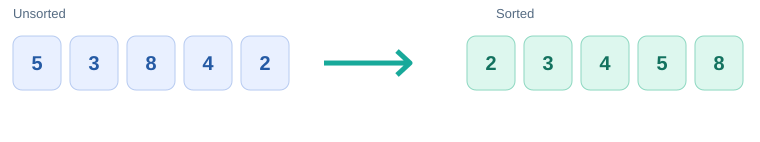

Algorithms • Java • Interactive diagrams
A detailed, visual reference to 21 implemented algorithms—with interactive steps, complexity trade-offs, stability, and tested Java code.
21 Java implementations · Interactive stepper · Offline-friendly · Randomized test harness
Sorting transforms a sequence such as [5, 3, 8, 4, 2] into [2, 3, 4, 5, 8]. Different algorithms trade comparisons, element moves, memory, and input assumptions.

Same elements, new order; a correct sorting algorithm never loses or duplicates values.
n = elements; k = key range / number of buckets; d = digit passes; b = radix base. Bounds and storage can depend on implementations.
| Algorithm | Time | Space | Stable |
|---|---|---|---|
| Bubble Sort | O(n) best · O(n²) worst | O(1) | Yes |
| Selection Sort | O(n²) in all cases | O(1) | No |
| Insertion Sort | O(n) best · O(n²) worst | O(1) | Yes |
| Binary Insertion Sort | O(n log n) comparisons · O(n²) movements | O(1) | Yes |
| Shell Sort | Gap-sequence dependent; O(n²) worst with halving | O(1) | No |
| Merge Sort | Θ(n log n) all cases | O(n) | Yes |
| Quick Sort | O(n log n) avg · O(n²) worst | O(log n) avg stack | No |
| Three-way Quick Sort | O(n log n) typical · O(n²) worst | O(log n) typical stack | No |
| Heap Sort | Θ(n log n) worst | O(1) | No |
| Counting Sort | Θ(n+k) | O(n+k) | Yes |
| Radix Sort (LSD) | Θ(d(n+b)), base b | O(n+b) | Yes |
| Bucket Sort | O(n+k) expected under uniform spread · O(n²) worst | O(n+k) | Depends |
| Cocktail Shaker Sort | O(n) best · O(n²) worst | O(1) | Yes |
| Comb Sort | Typically subquadratic in practice · O(n²) worst | O(1) | No |
| Gnome Sort | O(n) best · O(n²) worst | O(1) | Yes |
| Odd–Even Sort | O(n) best with early exit · O(n²) worst | O(1) | Yes |
| Cycle Sort | Θ(n²) | O(1) | No |
| Pancake Sort | Θ(n²) | O(1) | No |
| Tree Sort | O(n log n) average · O(n²) worst | O(n) | Usually no |
| IntroSort | O(n log n) guaranteed | O(log n) stack | No |
| Bitonic Sort | Θ(n log² n) | O(log n) recursion | No |
Big-O is not a stopwatch. Cache locality, branch prediction, comparison cost, write cost, input shape and memory allocation matter greatly. O(n log n) algorithms differ significantly in real deployments.
Choose an algorithm. The bars depict array positions after a meaningful operation or pass; highlighted bars show the working region, pivot, or sorted output. Use Next/Previous or autoplay.
Choose an algorithm and press Next.
Java default: start with Arrays.sort(array) or List.sort(comparator). For very large independent primitive arrays, benchmark Arrays.parallelSort(array). Exact JDK internals are implementation/version dependent; these APIs provide the meaningful contract.
The sections below include a mechanism, worked array transformation, use cases, trade-offs, and Java implementation. The complete Java companion source contains helpers, imports, and randomized tests.
ALGORITHM 01 · Quadratic / exchange
Swap adjacent out-of-order elements; the maximum bubbles to the end each pass.
Worked example
Pass 1: [5,3,8,4,2] → [3,5,4,2,8]. Pass 2: [3,4,2,5,8]. Pass 3: [3,2,4,5,8]. Pass 4: [2,3,4,5,8].
When useful: Useful for understanding swaps and early-exit optimization. Rarely the right production choice.
Important detail: Strict > comparisons preserve equal-key order; an already-sorted input exits after one scan.
public static void bubbleSort(int[] a) {
for (int end = a.length - 1; end > 0; end--) {
boolean swapped = false;
for (int j = 0; j < end; j++) {
if (a[j] > a[j + 1]) {
swap(a, j, j + 1);
swapped = true;
}
}
if (!swapped) break;
}
}This method may call helpers in the complete, compiled Java source file linked at the top of the page.
ALGORITHM 02 · Quadratic / selection
Find the minimum in the unsorted suffix and swap it into the next output position.
Worked example
Start [5,3,8,4,2] → choose 2 → [2,3,8,4,5] → choose 3 → [2,3,8,4,5] → choose 4 → [2,3,4,8,5] → choose 5 → [2,3,4,5,8].
When useful: Useful when minimizing the number of swaps matters more than comparisons.
Important detail: Only O(n) swaps, but still Θ(n²) comparisons. A long-distance swap can reorder equal elements.
public static void selectionSort(int[] a) {
for (int i = 0; i < a.length - 1; i++) {
int min = i;
for (int j = i + 1; j < a.length; j++) {
if (a[j] < a[min]) min = j;
}
swap(a, i, min);
}
}This method may call helpers in the complete, compiled Java source file linked at the top of the page.
ALGORITHM 03 · Quadratic / insertion
Build a sorted prefix; take the next value and shift larger values one position right.
Worked example
[5,3,8,4,2] → insert 3: [3,5,8,4,2] → insert 8: unchanged → insert 4: [3,4,5,8,2] → insert 2: [2,3,4,5,8].
When useful: Excellent for tiny arrays and nearly sorted data; commonly used inside hybrids.
Important detail: Its runtime is sensitive to inversions. Moving elements, rather than swapping adjacent values, reduces assignments.
public static void insertionSort(int[] a) {
insertionSortRange(a, 0, a.length - 1);
}This method may call helpers in the complete, compiled Java source file linked at the top of the page.
ALGORITHM 04 · Quadratic / insertion
Binary-search the position within the sorted prefix, then shift elements to make room.
Worked example
Sorted prefix [2,4,7,9], incoming 5 → binary search finds index 2 → shift 7,9 right → [2,4,5,7,9].
When useful: Useful if comparisons are expensive but movement is relatively cheap.
Important detail: Binary search reduces comparisons, not the O(n²) shifting cost; insert after equals for stability.
public static void binaryInsertionSort(int[] a) {
for (int i = 1; i < a.length; i++) {
int key = a[i], lo = 0, hi = i;
while (lo < hi) {
int mid = lo + (hi - lo) / 2;
if (key < a[mid]) hi = mid;
else lo = mid + 1; // insert after equals to preserve stability
}
for (int j = i; j > lo; j--) a[j] = a[j - 1];
a[lo] = key;
}
}This method may call helpers in the complete, compiled Java source file linked at the top of the page.
ALGORITHM 05 · Gap-based / insertion
Insertion-sort interleaved subsequences separated by a shrinking gap.
Worked example
[5,3,8,4,2] → gap 2: [2,3,5,4,8] → gap 1: [2,3,4,5,8].
When useful: Simple in-place alternative when moderate performance matters but extra memory is constrained.
Important detail: Performance depends strongly on gap sequence; not generally stable because distant moves can cross equals.
public static void shellSort(int[] a) {
for (int gap = a.length / 2; gap > 0; gap /= 2) {
for (int i = gap; i < a.length; i++) {
int key = a[i], j = i;
while (j >= gap && a[j - gap] > key) {
a[j] = a[j - gap];
j -= gap;
}
a[j] = key;
}
}
}This method may call helpers in the complete, compiled Java source file linked at the top of the page.
ALGORITHM 06 · Divide and conquer
Recursively split into halves, sort each half, and merge the two sorted halves.
Worked example
[5,3,8,4,2] → split [5,3,8] | [4,2] → left [3,5,8], right [2,4] → merge [2,3,4,5,8].
When useful: Strong choice for stable records, linked lists, external data, and predictable worst-case runtime.
Important detail: Use <= when taking an element from the left run to preserve stability. Array merge requires a temporary buffer.
public static void mergeSort(int[] a) {
int[] temp = new int[a.length];
mergeSort(a, temp, 0, a.length - 1);
}This method may call helpers in the complete, compiled Java source file linked at the top of the page.
ALGORITHM 07 · Divide and conquer
Choose a pivot, partition smaller elements left and larger elements right, recurse on each side.
Worked example
[5,3,8,4,2], pivot 2 → [2 | 3,8,4,5] → pivot 5 in right region → [2,3,4,5,8].
When useful: Fast general-purpose comparison algorithm; better pivot selection and 3-way partitioning improve robustness.
Important detail: Lomuto partition is easy to teach but degrades on ordered input with last-element pivots; randomized/median pivots help.
public static void quickSort(int[] a) { quickSort(a, 0, a.length - 1); }This method may call helpers in the complete, compiled Java source file linked at the top of the page.
ALGORITHM 08 · Divide and conquer
Partition into three bands: values < pivot, == pivot, and > pivot (Dutch national flag).
Worked example
[4,2,4,1,4,3] with pivot 4 → [2,1,3] | [4,4,4] | [] → sort only < and > groups.
When useful: Especially effective on inputs with many duplicates.
Important detail: Equal keys are placed into a middle band, preventing repeated partition work on duplicates.
public static void threeWayQuickSort(int[] a) {
quick3(a, 0, a.length - 1);
}This method may call helpers in the complete, compiled Java source file linked at the top of the page.
ALGORITHM 09 · Selection / heap
Build a max heap; repeatedly move the root maximum to the right, shrink the heap, and restore heap order.
Worked example
[5,3,8,4,2] → max-heap [8,4,5,3,2] → extract 8: [5,4,2,3 | 8] → continue → [2,3,4,5,8].
When useful: Useful for guaranteed n log n without a temporary O(n) array.
Important detail: Heap construction is O(n), not O(n log n). Children of node i are 2i+1 and 2i+2.
public static void heapSort(int[] a) {
heapSortRange(a, 0, a.length - 1);
}This method may call helpers in the complete, compiled Java source file linked at the top of the page.
ALGORITHM 10 · Distribution / integer keys
Count occurrences of each integer key; use cumulative counts to place items into exact output positions.
Worked example
[4,2,2,8,3,3,1] → frequencies 1:1, 2:2, 3:2, 4:1, 8:1 → prefix counts → [1,2,2,3,3,4,8].
When useful: Excellent for bounded dense integer ranges, e.g. scores from 0 to 100.
Important detail: For stable record sorting, compute prefix sums and scan input right-to-left; huge sparse ranges waste memory.
public static void countingSort(int[] a) {
if (a.length == 0) return;
int min = a[0], max = a[0];
for (int x : a) { min = Math.min(min, x); max = Math.max(max, x); }
int range = Math.toIntExact((long) max - min + 1);
int[] count = new int[range];
for (int x : a) count[x - min]++;
for (int i = 1; i < range; i++) count[i] += count[i - 1];
int[] output = new int[a.length];
for (int i = a.length - 1; i >= 0; i--) {
int x = a[i];
output[--count[x - min]] = x;
}
System.arraycopy(output, 0, a, 0, a.length);
}This method may call helpers in the complete, compiled Java source file linked at the top of the page.
ALGORITHM 11 · Distribution / digits
Sort by one digit at a time, starting at the least significant digit, using a stable digit sort.
Worked example
[170,45,75,90,802,24,2,66] → units [170,90,802,2,24,45,75,66] → tens [802,2,24,45,66,170,75,90] → hundreds [2,24,45,66,75,90,170,802].
When useful: Efficient for fixed-width integers, IDs, and fixed-length strings under suitable encodings.
Important detail: Each pass MUST be stable. The provided example supports nonnegative integers; signed values require additional handling.
public static void radixSort(int[] a) {
int max = 0;
for (int x : a) {
if (x < 0) throw new IllegalArgumentException("Use nonnegative integers");
max = Math.max(max, x);
}
int[] out = new int[a.length];
for (long exp = 1; max / exp > 0; exp *= 10) {
int[] count = new int[10];
for (int x : a) count[(int) (x / exp % 10)]++;
for (int i = 1; i < 10; i++) count[i] += count[i - 1];
for (int i = a.length - 1; i >= 0; i--) {
int x = a[i];
out[--count[(int) (x / exp % 10)]] = x;
}
System.arraycopy(out, 0, a, 0, a.length);
}
}This method may call helpers in the complete, compiled Java source file linked at the top of the page.
ALGORITHM 12 · Distribution / numeric range
Map values to buckets based on their interval, sort each bucket, then concatenate.
Worked example
[.42,.32,.23,.52,.25] → five 0.2-wide buckets: B1 [.32,.23,.25], B2 [.42,.52] → sort buckets → [.23,.25,.32,.42,.52].
When useful: Useful when values are known to be approximately uniformly distributed.
Important detail: The implementation accepts doubles in [0,1); uniformity, bucket count, and per-bucket algorithm determine efficiency.
public static void bucketSort(double[] a) {
if (a.length == 0) return;
@SuppressWarnings("unchecked")
List<Double>[] buckets = (List<Double>[]) new List[a.length];
for (int i = 0; i < buckets.length; i++) buckets[i] = new ArrayList<>();
for (double x : a) {
if (!(x >= 0.0 && x < 1.0))
throw new IllegalArgumentException("Values must be in [0,1)");
buckets[(int) (x * buckets.length)].add(x);
}
int pos = 0;
for (List<Double> bucket : buckets) {
for (int i = 1; i < bucket.size(); i++) {
double key = bucket.get(i);
int j = i - 1;
while (j >= 0 && bucket.get(j) > key) {
bucket.set(j + 1, bucket.get(j));
j--;
}
bucket.set(j + 1, key);
}
for (double x : bucket) a[pos++] = x;
}
}This method may call helpers in the complete, compiled Java source file linked at the top of the page.
ALGORITHM 13 · Quadratic / exchange
Bubble forward to place a maximum, then backward to place a minimum.
Worked example
[5,1,4,2] → forward: [1,4,2,5] → backward: [1,2,4,5].
When useful: Educational improvement when small values are stranded near the right end.
Important detail: Like Bubble Sort, adjacent strict > swaps preserve stability.
public static void cocktailSort(int[] a) {
int left = 0, right = a.length - 1;
while (left < right) {
boolean swapped = false;
for (int i = left; i < right; i++) {
if (a[i] > a[i + 1]) { swap(a, i, i + 1); swapped = true; }
}
if (!swapped) return;
right--;
swapped = false;
for (int i = right; i > left; i--) {
if (a[i - 1] > a[i]) { swap(a, i - 1, i); swapped = true; }
}
if (!swapped) return;
left++;
}
}This method may call helpers in the complete, compiled Java source file linked at the top of the page.
ALGORITHM 14 · Gap-based / exchange
Compare and swap pairs separated by a large gap; shrink the gap toward 1.
Worked example
[8,4,1,7,2] → compare widely separated values with gap 3 → then gap 2 → then adjacent pairs at gap 1.
When useful: Educational improvement on Bubble Sort that removes turtles (small values near the far end).
Important detail: The common shrink factor is about 1.3; the example uses integer arithmetic for a factor near 1.3.
public static void combSort(int[] a) {
int gap = a.length;
boolean swapped = true;
while (gap > 1 || swapped) {
gap = Math.max(1, (gap * 10) / 13);
swapped = false;
for (int i = 0; i + gap < a.length; i++) {
if (a[i] > a[i + gap]) { swap(a, i, i + gap); swapped = true; }
}
}
}This method may call helpers in the complete, compiled Java source file linked at the top of the page.
ALGORITHM 15 · Quadratic / insertion
Walk forward if ordered; otherwise swap the offending pair and step backward.
Worked example
[5,3,4,2] → [3,5,4,2] → [3,4,5,2] → [3,4,2,5] → [3,2,4,5] → [2,3,4,5].
When useful: Very simple insertion-like algorithm, mostly educational.
Important detail: Moves backward on inversions, so it is effectively insertion sort by adjacent swaps.
public static void gnomeSort(int[] a) {
int i = 1;
while (i < a.length) {
if (i == 0 || a[i - 1] <= a[i]) i++;
else { swap(a, i - 1, i); i--; }
}
}This method may call helpers in the complete, compiled Java source file linked at the top of the page.
ALGORITHM 16 · Quadratic / parallel phases
Alternate compare-exchange operations on odd-start and even-start neighboring index pairs.
Worked example
[5,3,8,4,2] → odd pairs (1,2),(3,4) → [5,3,8,2,4] → even pairs (0,1),(2,3) → [3,5,2,8,4] → repeat.
When useful: Interesting because non-overlapping pairs in one phase can be processed in parallel.
Important detail: Also called odd-even transposition sort; distinct from the unrelated odd-even merge sorting network.
public static void oddEvenSort(int[] a) {
boolean sorted = false;
while (!sorted) {
sorted = true;
for (int i = 1; i + 1 < a.length; i += 2) {
if (a[i] > a[i + 1]) { swap(a, i, i + 1); sorted = false; }
}
for (int i = 0; i + 1 < a.length; i += 2) {
if (a[i] > a[i + 1]) { swap(a, i, i + 1); sorted = false; }
}
}
}This method may call helpers in the complete, compiled Java source file linked at the top of the page.
ALGORITHM 17 · Quadratic / minimum writes
For each value, count how many elements rank before it, then rotate the permutation cycle into place.
Worked example
[3,1,2] → 3 belongs at index 2 (displace 2) → 2 belongs at index 1 (displace 1) → 1 belongs at index 0 → [1,2,3].
When useful: Useful when writes to storage are unusually expensive (e.g. specialized memory).
Important detail: Needs careful handling of duplicates and temporary held values. It minimizes writes, not comparisons.
public static void cycleSort(int[] a) {
for (int start = 0; start < a.length - 1; start++) {
int item = a[start], pos = start;
for (int i = start + 1; i < a.length; i++) if (a[i] < item) pos++;
if (pos == start) continue;
while (item == a[pos]) pos++;
int old = a[pos]; a[pos] = item; item = old;
while (pos != start) {
pos = start;
for (int i = start + 1; i < a.length; i++) if (a[i] < item) pos++;
while (item == a[pos]) pos++;
old = a[pos]; a[pos] = item; item = old;
}
}
}This method may call helpers in the complete, compiled Java source file linked at the top of the page.
ALGORITHM 18 · Quadratic / prefix reversal
Use only prefix reversals to bring the maximum to the front, then flip it to the end of the unsorted section.
Worked example
[3,1,4,2] → flip first 3: [4,1,3,2] → flip first 4: [2,3,1,4] → place 3 next → [1,2,3,4].
When useful: Interesting for constrained-operation puzzles and specialized physical ordering problems.
Important detail: Sorting through flips instead of arbitrary swaps typically uses O(n) prefix reversals.
public static void pancakeSort(int[] a) {
for (int size = a.length; size > 1; size--) {
int max = 0;
for (int i = 1; i < size; i++) if (a[i] > a[max]) max = i;
if (max == size - 1) continue;
if (max != 0) reverse(a, 0, max);
reverse(a, 0, size - 1);
}
}This method may call helpers in the complete, compiled Java source file linked at the top of the page.
ALGORITHM 19 · Tree / insertion
Insert values into a binary search tree and read them with in-order traversal.
Worked example
Insert [5,3,8,4,2] into a BST. In-order traversal: left (2,3,4) → root 5 → right 8.
When useful: Useful for understanding binary search trees and ordering by traversal.
Important detail: A naive BST can become a linked list on ordered input. A balanced tree changes worst-case time to O(n log n).
public static void treeSort(int[] a) {
Node root = null;
for (int x : a) root = insert(root, x);
int[] index = {0};
inOrder(root, a, index);
}This method may call helpers in the complete, compiled Java source file linked at the top of the page.
ALGORITHM 20 · Hybrid / production
Start with quicksort, switch to heapsort if recursion depth gets excessive, use insertion sort on small pieces.
Worked example
Start partitioning like Quick Sort → if depth reaches 2⌊log₂ n⌋, Heap Sort remaining segment → Insertion Sort tiny segments.
When useful: Strong default choice for performant in-place comparison sorting; common in standard libraries.
Important detail: Provided code uses median-of-three, three-way partitions, and smaller-side-first recursion.
public static void introSort(int[] a) {
if (a.length < 2) return;
int depthLimit = 2 * (31 - Integer.numberOfLeadingZeros(a.length));
introSort(a, 0, a.length - 1, depthLimit);
}This method may call helpers in the complete, compiled Java source file linked at the top of the page.
ALGORITHM 21 · Sorting network / parallel
Construct bitonic sequences and apply a fixed compare-exchange network in ascending/descending halves.
Worked example
For 8 inputs: sort 4 ascending and 4 descending → compare-exchange across the halves → recursively merge 4s then 2s.
When useful: Useful for GPU/SIMD/parallel sorting networks with predictable access patterns.
Important detail: The example implementation expects a power-of-two input length.
public static void bitonicSort(int[] a) {
if (a.length == 0 || (a.length & (a.length - 1)) != 0)
throw new IllegalArgumentException("Length must be a power of two");
bitonic(a, 0, a.length, true);
}This method may call helpers in the complete, compiled Java source file linked at the top of the page.
The companion class includes 21 sorting algorithms, their helper methods, edge cases, and a randomized test harness that checks results against Arrays.sort. It compiles with Java 17+.
import java.util.*;
import java.util.function.Consumer;
/** Self-contained implementations of classic sorting algorithms (Java 17+). */
public class SortingAlgorithmsGuide {
private static void swap(int[] a, int i, int j) {
int tmp = a[i]; a[i] = a[j]; a[j] = tmp;
}
// 1. Bubble Sort: stable, in-place, O(n^2) worst / O(n) best.
public static void bubbleSort(int[] a) {
for (int end = a.length - 1; end > 0; end--) {
boolean swapped = false;
for (int j = 0; j < end; j++) {
if (a[j] > a[j + 1]) {
swap(a, j, j + 1);
swapped = true;
}
}
if (!swapped) break;
}
}
// 2. Selection Sort: in-place, O(n^2), unstable.
public static void selectionSort(int[] a) {
for (int i = 0; i < a.length - 1; i++) {
int min = i;
for (int j = i + 1; j < a.length; j++) {
if (a[j] < a[min]) min = j;
}
swap(a, i, min);
}
}
// 3. Insertion Sort: stable, adaptive, in-place.
public static void insertionSort(int[] a) {
insertionSortRange(a, 0, a.length - 1);
}
private static void insertionSortRange(int[] a, int lo, int hi) {
for (int i = lo + 1; i <= hi; i++) {
int key = a[i];
int j = i - 1;
while (j >= lo && a[j] > key) {
a[j + 1] = a[j];
j--;
}
a[j + 1] = key;
}
}
// 4. Binary Insertion Sort: O(n log n) comparisons, O(n^2) shifts.
public static void binaryInsertionSort(int[] a) {
for (int i = 1; i < a.length; i++) {
int key = a[i], lo = 0, hi = i;
while (lo < hi) {
int mid = lo + (hi - lo) / 2;
if (key < a[mid]) hi = mid;
else lo = mid + 1; // insert after equals to preserve stability
}
for (int j = i; j > lo; j--) a[j] = a[j - 1];
a[lo] = key;
}
}
// 5. Shell Sort with halving gaps. Unstable; complexity gap-dependent.
public static void shellSort(int[] a) {
for (int gap = a.length / 2; gap > 0; gap /= 2) {
for (int i = gap; i < a.length; i++) {
int key = a[i], j = i;
while (j >= gap && a[j - gap] > key) {
a[j] = a[j - gap];
j -= gap;
}
a[j] = key;
}
}
}
// 6. Merge Sort: stable, O(n log n), O(n) extra storage.
public static void mergeSort(int[] a) {
int[] temp = new int[a.length];
mergeSort(a, temp, 0, a.length - 1);
}
private static void mergeSort(int[] a, int[] tmp, int lo, int hi) {
if (lo >= hi) return;
int mid = lo + (hi - lo) / 2;
mergeSort(a, tmp, lo, mid);
mergeSort(a, tmp, mid + 1, hi);
int i = lo, j = mid + 1, out = lo;
while (i <= mid && j <= hi) {
tmp[out++] = a[i] <= a[j] ? a[i++] : a[j++];
}
while (i <= mid) tmp[out++] = a[i++];
while (j <= hi) tmp[out++] = a[j++];
System.arraycopy(tmp, lo, a, lo, hi - lo + 1);
}
// 7. Quick Sort (Lomuto partition): average O(n log n), worst O(n^2).
public static void quickSort(int[] a) { quickSort(a, 0, a.length - 1); }
private static void quickSort(int[] a, int lo, int hi) {
if (lo >= hi) return;
int p = partition(a, lo, hi);
quickSort(a, lo, p - 1);
quickSort(a, p + 1, hi);
}
private static int partition(int[] a, int lo, int hi) {
int pivot = a[hi];
int boundary = lo;
for (int j = lo; j < hi; j++) {
if (a[j] <= pivot) swap(a, boundary++, j);
}
swap(a, boundary, hi);
return boundary;
}
// 8. Three-way Quick Sort: efficient when many values are duplicated.
public static void threeWayQuickSort(int[] a) {
quick3(a, 0, a.length - 1);
}
private static void quick3(int[] a, int lo, int hi) {
if (lo >= hi) return;
int pivot = a[lo], lt = lo, i = lo + 1, gt = hi;
while (i <= gt) {
if (a[i] < pivot) swap(a, lt++, i++);
else if (a[i] > pivot) swap(a, i, gt--);
else i++;
}
quick3(a, lo, lt - 1);
quick3(a, gt + 1, hi);
}
// 9. Heap Sort: in-place O(n log n) guaranteed, unstable.
public static void heapSort(int[] a) {
heapSortRange(a, 0, a.length - 1);
}
private static void heapSortRange(int[] a, int lo, int hi) {
int n = hi - lo + 1;
for (int i = n / 2 - 1; i >= 0; i--) siftDown(a, lo, n, i);
for (int end = n - 1; end > 0; end--) {
swap(a, lo, lo + end);
siftDown(a, lo, end, 0);
}
}
private static void siftDown(int[] a, int offset, int size, int root) {
while (true) {
int largest = root, l = 2 * root + 1, r = l + 1;
if (l < size && a[offset + l] > a[offset + largest]) largest = l;
if (r < size && a[offset + r] > a[offset + largest]) largest = r;
if (largest == root) return;
swap(a, offset + root, offset + largest);
root = largest;
}
}
// 10. Stable Counting Sort supporting negative integers.
public static void countingSort(int[] a) {
if (a.length == 0) return;
int min = a[0], max = a[0];
for (int x : a) { min = Math.min(min, x); max = Math.max(max, x); }
int range = Math.toIntExact((long) max - min + 1);
int[] count = new int[range];
for (int x : a) count[x - min]++;
for (int i = 1; i < range; i++) count[i] += count[i - 1];
int[] output = new int[a.length];
for (int i = a.length - 1; i >= 0; i--) {
int x = a[i];
output[--count[x - min]] = x;
}
System.arraycopy(output, 0, a, 0, a.length);
}
// 11. LSD Radix Sort (base 10) for nonnegative int arrays.
public static void radixSort(int[] a) {
int max = 0;
for (int x : a) {
if (x < 0) throw new IllegalArgumentException("Use nonnegative integers");
max = Math.max(max, x);
}
int[] out = new int[a.length];
for (long exp = 1; max / exp > 0; exp *= 10) {
int[] count = new int[10];
for (int x : a) count[(int) (x / exp % 10)]++;
for (int i = 1; i < 10; i++) count[i] += count[i - 1];
for (int i = a.length - 1; i >= 0; i--) {
int x = a[i];
out[--count[(int) (x / exp % 10)]] = x;
}
System.arraycopy(out, 0, a, 0, a.length);
}
}
// 12. Bucket Sort for finite double values in [0,1).
public static void bucketSort(double[] a) {
if (a.length == 0) return;
@SuppressWarnings("unchecked")
List<Double>[] buckets = (List<Double>[]) new List[a.length];
for (int i = 0; i < buckets.length; i++) buckets[i] = new ArrayList<>();
for (double x : a) {
if (!(x >= 0.0 && x < 1.0))
throw new IllegalArgumentException("Values must be in [0,1)");
buckets[(int) (x * buckets.length)].add(x);
}
int pos = 0;
for (List<Double> bucket : buckets) {
for (int i = 1; i < bucket.size(); i++) {
double key = bucket.get(i);
int j = i - 1;
while (j >= 0 && bucket.get(j) > key) {
bucket.set(j + 1, bucket.get(j));
j--;
}
bucket.set(j + 1, key);
}
for (double x : bucket) a[pos++] = x;
}
}
// 13. Cocktail Shaker Sort: bidirectional Bubble Sort, stable.
public static void cocktailSort(int[] a) {
int left = 0, right = a.length - 1;
while (left < right) {
boolean swapped = false;
for (int i = left; i < right; i++) {
if (a[i] > a[i + 1]) { swap(a, i, i + 1); swapped = true; }
}
if (!swapped) return;
right--;
swapped = false;
for (int i = right; i > left; i--) {
if (a[i - 1] > a[i]) { swap(a, i - 1, i); swapped = true; }
}
if (!swapped) return;
left++;
}
}
// 14. Comb Sort: gap-based Bubble Sort (unstable).
public static void combSort(int[] a) {
int gap = a.length;
boolean swapped = true;
while (gap > 1 || swapped) {
gap = Math.max(1, (gap * 10) / 13);
swapped = false;
for (int i = 0; i + gap < a.length; i++) {
if (a[i] > a[i + gap]) { swap(a, i, i + gap); swapped = true; }
}
}
}
// 15. Gnome Sort: swap items backward until each is correctly inserted.
public static void gnomeSort(int[] a) {
int i = 1;
while (i < a.length) {
if (i == 0 || a[i - 1] <= a[i]) i++;
else { swap(a, i - 1, i); i--; }
}
}
// 16. Odd-Even Sort: alternating even/odd compare-exchange phases.
public static void oddEvenSort(int[] a) {
boolean sorted = false;
while (!sorted) {
sorted = true;
for (int i = 1; i + 1 < a.length; i += 2) {
if (a[i] > a[i + 1]) { swap(a, i, i + 1); sorted = false; }
}
for (int i = 0; i + 1 < a.length; i += 2) {
if (a[i] > a[i + 1]) { swap(a, i, i + 1); sorted = false; }
}
}
}
// 17. Cycle Sort: minimizes writes, but O(n^2) comparisons.
public static void cycleSort(int[] a) {
for (int start = 0; start < a.length - 1; start++) {
int item = a[start], pos = start;
for (int i = start + 1; i < a.length; i++) if (a[i] < item) pos++;
if (pos == start) continue;
while (item == a[pos]) pos++;
int old = a[pos]; a[pos] = item; item = old;
while (pos != start) {
pos = start;
for (int i = start + 1; i < a.length; i++) if (a[i] < item) pos++;
while (item == a[pos]) pos++;
old = a[pos]; a[pos] = item; item = old;
}
}
}
// 18. Pancake Sort: places largest element using prefix reversals.
public static void pancakeSort(int[] a) {
for (int size = a.length; size > 1; size--) {
int max = 0;
for (int i = 1; i < size; i++) if (a[i] > a[max]) max = i;
if (max == size - 1) continue;
if (max != 0) reverse(a, 0, max);
reverse(a, 0, size - 1);
}
}
private static void reverse(int[] a, int l, int r) {
while (l < r) swap(a, l++, r--);
}
// 19. Tree Sort: unbalanced BST, O(n log n) average / O(n^2) worst.
private static class Node {
int value, count = 1;
Node left, right;
Node(int value) { this.value = value; }
}
public static void treeSort(int[] a) {
Node root = null;
for (int x : a) root = insert(root, x);
int[] index = {0};
inOrder(root, a, index);
}
private static Node insert(Node root, int x) {
if (root == null) return new Node(x);
if (x < root.value) root.left = insert(root.left, x);
else if (x > root.value) root.right = insert(root.right, x);
else root.count++;
return root;
}
private static void inOrder(Node root, int[] a, int[] index) {
if (root == null) return;
inOrder(root.left, a, index);
for (int i = 0; i < root.count; i++) a[index[0]++] = root.value;
inOrder(root.right, a, index);
}
// 20. IntroSort: Quick Sort + Heap Sort fallback + Insertion Sort.
// Worst-case O(n log n), with O(log n) recursion due to smaller-side-first.
public static void introSort(int[] a) {
if (a.length < 2) return;
int depthLimit = 2 * (31 - Integer.numberOfLeadingZeros(a.length));
introSort(a, 0, a.length - 1, depthLimit);
}
private static void introSort(int[] a, int lo, int hi, int depth) {
while (hi - lo + 1 > 16) {
if (depth == 0) { heapSortRange(a, lo, hi); return; }
depth--;
int mid = lo + (hi - lo) / 2;
int pivot = medianOfThree(a[lo], a[mid], a[hi]);
int lt = lo, i = lo, gt = hi;
while (i <= gt) {
if (a[i] < pivot) swap(a, lt++, i++);
else if (a[i] > pivot) swap(a, i, gt--);
else i++;
}
if (lt - lo < hi - gt) {
introSort(a, lo, lt - 1, depth);
lo = gt + 1;
} else {
introSort(a, gt + 1, hi, depth);
hi = lt - 1;
}
}
insertionSortRange(a, lo, hi);
}
private static int medianOfThree(int a, int b, int c) {
if (a > b) { int t = a; a = b; b = t; }
if (b > c) { int t = b; b = c; c = t; }
if (a > b) b = a;
return b;
}
// 21. Bitonic Sort: sorting network, requires power-of-two array size.
public static void bitonicSort(int[] a) {
if (a.length == 0 || (a.length & (a.length - 1)) != 0)
throw new IllegalArgumentException("Length must be a power of two");
bitonic(a, 0, a.length, true);
}
private static void bitonic(int[] a, int lo, int count, boolean asc) {
if (count <= 1) return;
int k = count / 2;
bitonic(a, lo, k, true);
bitonic(a, lo + k, k, false);
bitonicMerge(a, lo, count, asc);
}
private static void bitonicMerge(int[] a, int lo, int count, boolean asc) {
if (count <= 1) return;
int k = count / 2;
for (int i = lo; i < lo + k; i++) {
if (asc == (a[i] > a[i + k])) swap(a, i, i + k);
}
bitonicMerge(a, lo, k, asc);
bitonicMerge(a, lo + k, k, asc);
}
private static void test(String name, Consumer<int[]> sort) {
Random rnd = new Random(42);
for (int n = 0; n <= 80; n++) {
for (int trial = 0; trial < 20; trial++) {
int[] a = rnd.ints(n, -30, 31).toArray();
int[] expected = a.clone();
Arrays.sort(expected);
sort.accept(a);
if (!Arrays.equals(a, expected))
throw new AssertionError(name + " failed: expected " + Arrays.toString(expected)
+ ", got " + Arrays.toString(a));
}
}
System.out.println("PASS: " + name);
}
public static void main(String[] args) {
test("Bubble", SortingAlgorithmsGuide::bubbleSort);
test("Selection", SortingAlgorithmsGuide::selectionSort);
test("Insertion", SortingAlgorithmsGuide::insertionSort);
test("Binary Insertion", SortingAlgorithmsGuide::binaryInsertionSort);
test("Shell", SortingAlgorithmsGuide::shellSort);
test("Merge", SortingAlgorithmsGuide::mergeSort);
test("Quick", SortingAlgorithmsGuide::quickSort);
test("Three-Way Quick", SortingAlgorithmsGuide::threeWayQuickSort);
test("Heap", SortingAlgorithmsGuide::heapSort);
test("Counting", SortingAlgorithmsGuide::countingSort);
test("Cocktail", SortingAlgorithmsGuide::cocktailSort);
test("Comb", SortingAlgorithmsGuide::combSort);
test("Gnome", SortingAlgorithmsGuide::gnomeSort);
test("Odd-Even", SortingAlgorithmsGuide::oddEvenSort);
test("Cycle", SortingAlgorithmsGuide::cycleSort);
test("Pancake", SortingAlgorithmsGuide::pancakeSort);
test("Tree", SortingAlgorithmsGuide::treeSort);
test("Intro", SortingAlgorithmsGuide::introSort);
Random rnd = new Random(42);
for (int n = 0; n <= 80; n++) {
for (int trial = 0; trial < 20; trial++) {
int[] a = rnd.ints(n, 0, 200).toArray();
int[] expected = a.clone(); Arrays.sort(expected);
radixSort(a);
if (!Arrays.equals(a, expected)) throw new AssertionError("Radix");
}
}
System.out.println("PASS: Radix");
for (int n = 1; n <= 256; n <<= 1) {
for (int trial = 0; trial < 20; trial++) {
int[] a = rnd.ints(n, -20, 21).toArray();
int[] expected = a.clone(); Arrays.sort(expected);
bitonicSort(a);
if (!Arrays.equals(a, expected)) throw new AssertionError("Bitonic");
}
}
System.out.println("PASS: Bitonic");
double[] decimals = {0.42, 0.12, 0.99, 0.31, 0.12, 0.76};
bucketSort(decimals);
System.out.println("Bucket: " + Arrays.toString(decimals));
System.out.println("All tests passed.");
}
}Compile: javac SortingAlgorithmsGuide.java
Run tests: java SortingAlgorithmsGuide
The demonstration supports negative values unless noted: LSD Radix is nonnegative; Bucket expects doubles in [0,1); Bitonic expects a power-of-two length.
Sorting Algorithms — Visual Java reference • All diagrams, styles and playback work offline